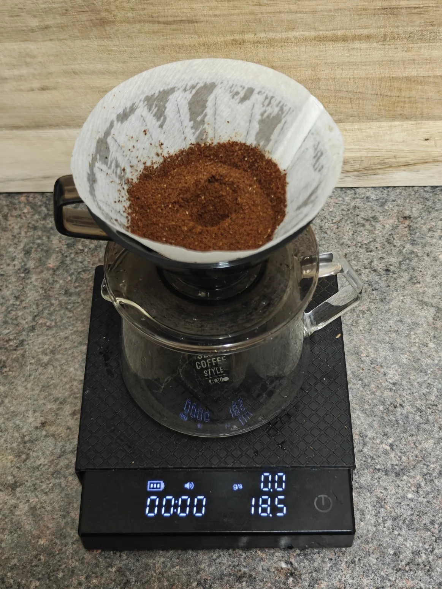
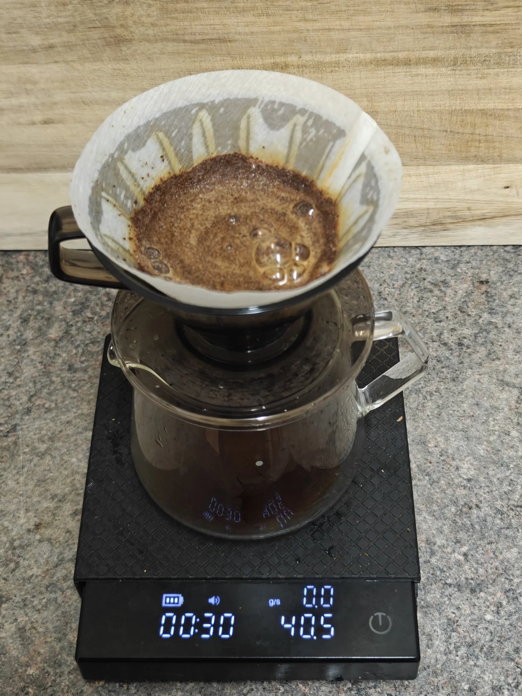
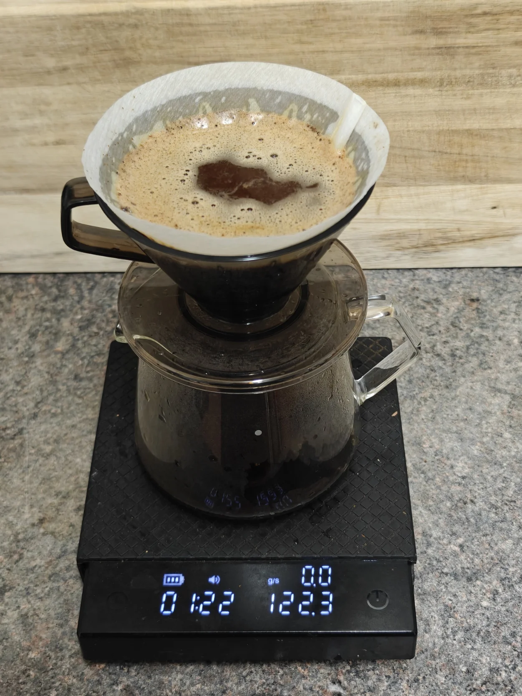
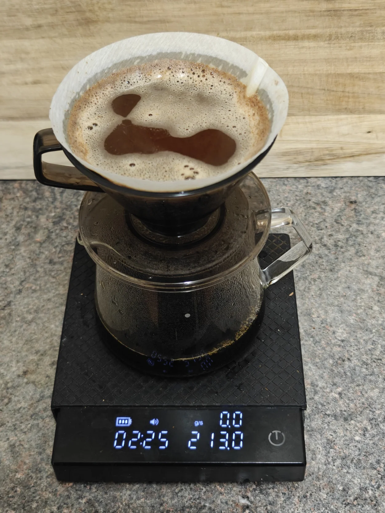
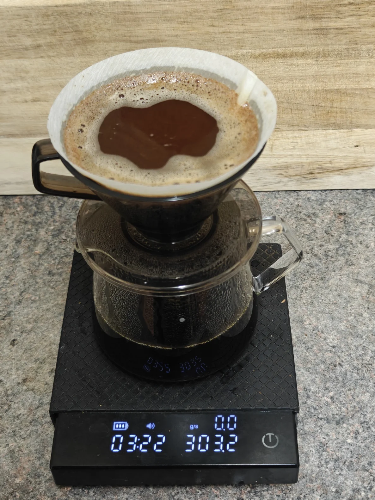
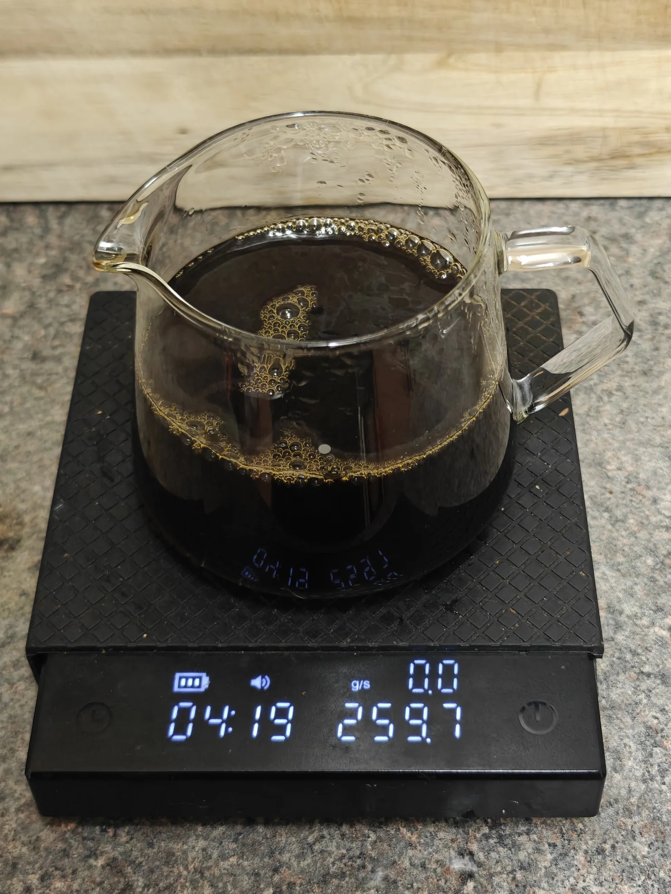
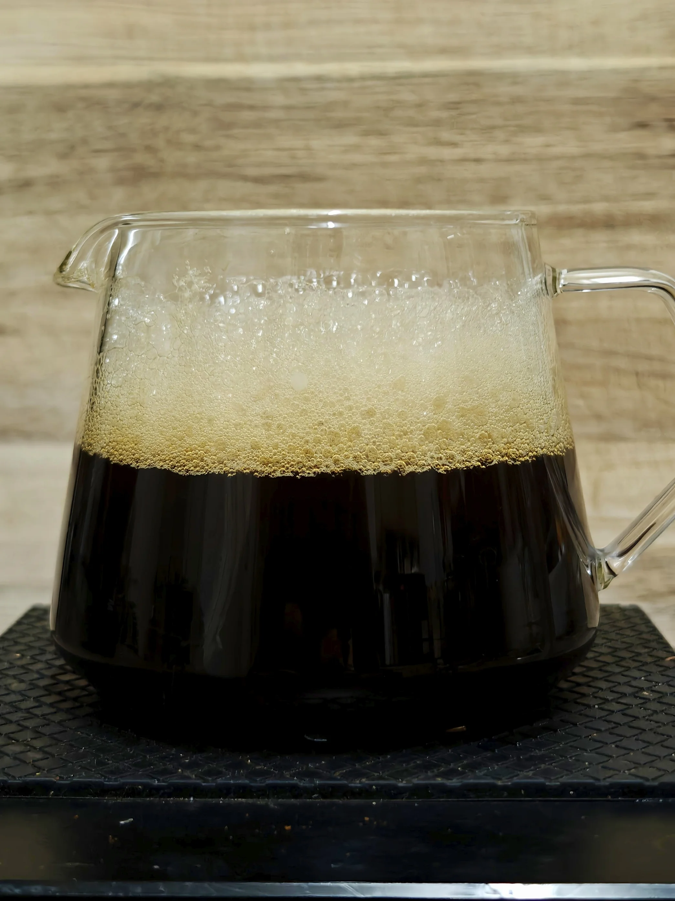

Brew recipe: 18.5g coffee and 300g water at 95°C
0:00 40g (0g total) - 0:15 (~2.5g/s)
1:00 80g (120g total) - 1:15 (~5g/s)
2:00 90g (210g total) - 2:15 (6g/s)
3:00 90g (210g total) - 3:15 (6g/s)
4:15 Finished
Some coffees are meant to be felt, not just tasted and enjoyed, but to be ruminated on. A longer-than-usual lingering taste that coats the mouth in an almost film-like stickiness; a cup of water is the perfect accompaniment if you want to refresh the palate. This Dense brew stays on your tongue, on your lips; it sticks to your mouth-nose passages - a single cup that is to be sipped slowly.
Dense (brew) chases the textural feeling of the brew, something that lingers and genuinely satisfies the insatiable urge for coffee after a sip. Decadently slow, an evolving cup. It's neither thin nor light; it opens up over time - the slower the sip, the better.
This recipe was adapted from Tetsu Kasuya's 4:6 brew to be easier and more consistent. Instead of a balanced cup that is sweet and strong, the changes made result in a slow and meditative release of flavour.
As we're aiming to capture more of the body, we'll utilise agitation. In the same vein, we want even extractions and lipid drawdown. To do this, the water contact area will change with each pour, allowing the body to take priority.
The pour structure mentioned above forgoes a few details, mainly how we will agitate and pour over the actual coffee bed, which, in my experience, is the main variable in this recipe.
We are using 18.5g of coffee, 300g of water, and staying at 95°C throughout. Each pour will be 15s long and after each minute mark.
Starting with the bloom at 0:00, we do a 40g bloom over the 18.5g of ground coffee until the timer reaches 15s - straight after, we'll use a WDT to agitate the bed to break up any dry clumps. My pour rate here is ~2.5g of water per second.
The second pour is at 1:00 (45s rest from the bloom); we pour 80g until the timer reaches 1:15. The pour will be in circles near the centre. The pour rate here is ~5g per second.
The final pour is at 3:00 (45s rest from the previous pour); we pour 90g until the timer reaches 3:15. The pour will be in circles between the edge and centre. The pour rate here is 6g per second.
No more pours after 3:15, and the brew should finish at 4:10 ± 5s.
The brew should look quite murky or opaque with a deep resinous red hue. The aromatic properties of the cup will be similar to soup - warm but heavy. The taste, when compared to the same honey-processed Colombian with a lighter brew style, is very much on the fruitier side but has very little acidity. As the brew itself is "viscous", it does coat the tongue; the roast profile and bitterness will be at the back of the mouth, with the rest of the profile experienced elsewhere.
An interesting test is to pour the coffee from a height a few times until a very stable foam has settled on top - I think this is due to the higher lipid extraction from the coffee.






